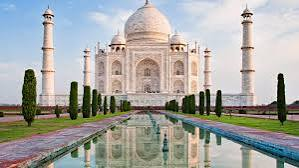
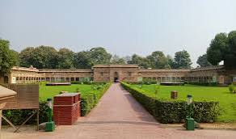
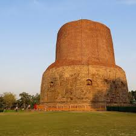
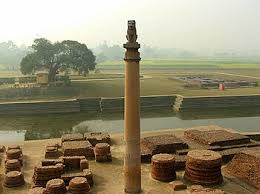
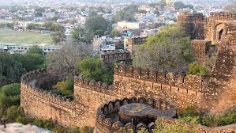
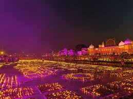

Agra

Taj Mahal
UNESCO World Heritage Site, iconic white marble mausoleum

Agra Fort
UNESCO World Heritage Site, historic fort with palaces and museums

Fatehpur Sikri
UNESCO World Heritage Site, Mughal city with palaces and Jama Masjid

Itmad-ud-Daula's Tomb
Mughal-era mausoleum known as the "Baby Taj"
Varanasi

Kashi Vishwanath Temple
Holiest temple dedicated to Lord Shiva

Dashashwamedh Ghat
Famous ghat for Ganga Aarti (ritual offering to River Ganges)

Sarnath
Buddhist pilgrimage site with stupas, monasteries, and Ashoka Pillar

Paragliding in Varanasi
Adventure sport offering aerial views of Varanasi and River Ganges
Lucknow

Bara Imambara
Mughal-era complex with a labyrinth, mosque, and Bhul Bhulaiya

Chota Imambara
Shia Muslim congregation hall and mausoleum

Rumi Darwaza
Historic gate known as the "Turkish Gate"
Allahabad (Prayagraj)

Triveni Sangam
Confluence of three rivers (Ganges, Yamuna, and mythical Saraswati)

Allahabad Fort
Fortification built by Emperor Akbar, overlooking the confluence
Mathura and Vrindavan

Krishna Janmasthan Temple
Birthplace of Lord Krishna in Mathura

Banke Bihari Temple
Famous temple dedicated to Lord Krishna in Vrindavan

Prem Mandir
Temple in Vrindavan with intricate marble work and lighting
Ayodhya

Ram Janmabhoomi
Birthplace of Lord Rama, site of the disputed Ram Mandir/Babri Masjid

Hanuman Garhi
Temple dedicated to Lord Hanuman
Kushinagar

Mahaparinirvana Temple
Buddhist temple marking the place of Lord Buddha's final sermon

Ramabhar Stupa
Stupa marking the cremation site of Lord Buddha
Sarnath

Dhamek Stupa
Buddhist stupa marking the spot of Lord Buddha's first sermon

Sarnath Museum
Museum displaying ancient Buddhist sculptures and artifacts

Ashoka Pillar
Historic pillar erected by Emperor Ashoka
Other Attractions
Vrindavan
Pilgrimage town associated with Lord Krishna, famous for temples and festive celebrations

Jhansi
Historic city known for Jhansi Fort and Rani Jhansi Museum
Festivals and Cultural Events

Kumbh Mela
Massive religious gathering held every 12 years at Prayagraj (Allahabad)

Diwali in Ayodhya
Celebrations in the birthplace of Lord Rama with elaborate decorations and rituals
Adventure and Nature Activities
Chambal Wildlife Sanctuary
Wildlife sanctuary known for gharials, mugger crocodiles, and birdwatching
Paragliding in Varanasi
Adventure sport offering aerial views of Varanasi and River Ganges